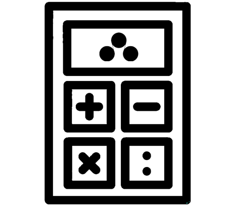
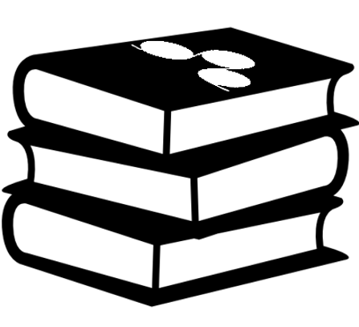

Willkommen auf Papiertechnik.at
Ihrer Plattform rund um die Welt der Papiertechnik!
Entdecken Sie eine Vielzahl an Funktionen, die speziell für die Bedürfnisse der Papierindustrie entwickelt wurden. Nutzen Sie unseren Papiertechnischen Taschenrechner, absolvieren Sie interaktive E-Learning-Module im Learningcenter, oder testen Sie Ihr Wissen im Quizbereich..
Papiertechnischer Taschenrechner
Für das Arbeiten in Papiertechnischen Laboren.
Learning-Center
Vertiefen Sie ihr Wissen im Learningcenter.
Quizbereich
Überprüfen Sie Ihr Wissen im Quizbereich